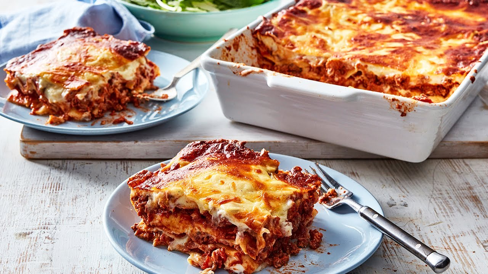

World's Best Lasagne

Description
Classic beef lasagne is one of the best family meals. The traditional Italian version takes love and care, but it serves 8 people and freezes well. Learn all the best tips to cook the best lasagne, as well as a quick version that you can make with leftover bolognese.
Ingredients
Basic bolognese sauce:
- 1 tbsp olive oil
- 1 onion, finely chopped
- 2 celery stalks
- 2 garlic cloves
- 1kg beef mince
- 110g tomato paste
- 185ml stock or red wine
- 1 x 400g can diced tomatoes
- 1 x 700g bottle tomato passata
Bechamel sauce:
- 4 cups milk
- 1 brown onion
- 8 parsley stalks
- 8 peppercorns
- 2 bay leaves
- 50g plain flour
- 3 tbsp butter
- 100g parmesan
- Pinch of nutmeg
- Salt and pepper to taste
Steps
Basic bolognese sauce:
- Heat the oil in a large heavy based saucepan over medium heat. Add the onion, celery and garlic and cook, stirring, for 5 minutes or until onion softens. Add mince and cook, stirring to break up lumps for 5 minutes or until browned
- Add the tomato paste and stock or red wine to mince mixture and bring to the boil. Reduce heat and simmer for 5 minutes or until stock or wine reduces slightly
- Add the diced tomato and passata and simmer, stirring occasionally, for 45 minutes or until sauce thickens
Bechamel sauce:
- Meanwhile, to make the bechamel sauce, combine the milk, onion, parsley stalks, peppercorns, cloves and bay leaves in a medium saucepan and bring to a simmer over medium heat. Remove from heat and set aside for 15 minutes to infuse. Strain the milk mixture through a fine sieve into a large jug. Discard solids
- Melt the butter in a large saucepan over medium-high heat until foaming. Add the flour and cook, stirring, for 1-2 minutes or until mixture bubbles and begins to come away from the side of the pan. Remove from heat
- Add half of the milk mixture, whisking continuously. Place pan back on medium-high heat. Whisk until thick. Add the rest of the milk, whisking continuously. Bring the sauce to a boil. Reduce the heat and simmer for five minutes, using a wooden spoon or spatula to stir continuously
- Add the Parmesan and stir until the cheese melts. Taste and season with nutmeg, salt and pepper, as desired